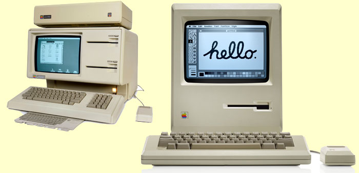
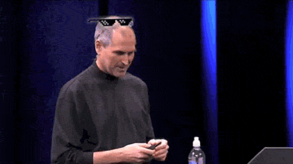
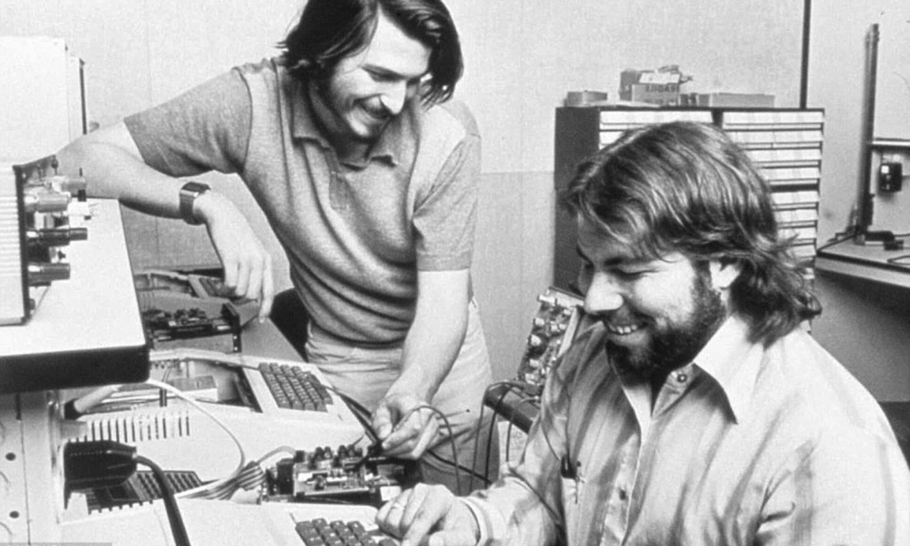
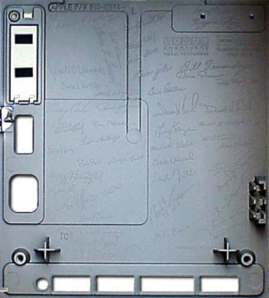
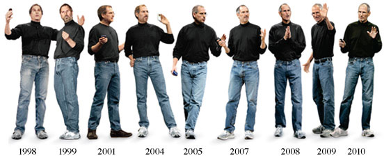

Steve Jobs tem uma filha!
Muitas pessoas não sabem disso, mas acredite ou não! Ele tem uma filha chamada Lisa. É uma assunto meio polêmico, mas basicamente a mãe de Lisa quando contou Steve sobre ela estar grávida dela, ele simplesmente recusou e disse que ela não seria sua filha. Mas olha que curioso! Existe até um computador Macintosh com o nome Lisa, entitulado Apple Lisa. Deve ter sido díficil para nosso amigo Esteves uma gravidez imprevista.
Steve Jobs não completou o seu Ensino Superior!
Sim meu meu amigo! Até o Steve Jobs não completou a faculdade, mas ele é o Steve Jobs né, quem é você?

Mesmo sendo um magnáta da área da tecnologia, Steve Jobs não sabia UM pingo de programação
Em uma entrevista dada por Steve Wozniak (O seu melhor amigo e o responsável técnico por toda a montação das máquinas Macintosh no começo da Apple), ele afirmou que "Steve didn't ever code", ou seja, traduzindo, Steve Jobs nunca programou!
Apesar disso, Steve Jobs reconhece a importância de que a programação é vital para todos. "I think everyone in this country should learn how to program a computer, because it teaches you how to think." Ou seja! Ele acha que todas as pessoas deveríam saber como programar, porque a programação ensina as pessoas a pensar. Isso é meio óbvio, mas quando consideramos que vem do Magnáta Esteves Trabalho, o papo é outro. Sua falta de conhecimento definitivamente não foi um impedimento para seu sucesso, ele não deixa de ser menos inteligente ou algo do tipo por não saber programação, ele conseguiu desenvolver um senso-crítico muito aguçado no mercado, e até agora não foi superado por ninguém.
Steve Jobs só comia peixe!
Ok, isso talvez tenha sido um pouco exagerado. Mas Steve Jobs, diferentemente do que muitas pessoas pensam, não era vegano. Ele era pescetariano, ou seja, 'tinha uma dieta exclusiva de peixes e frutos do mar.
Vai um peixinho ai?
Peça (literalmente) de arte
Essa daqui é boa: Assim que o Macintosh foi finalizado houve uma festa na casa de Jobs. Lá, ele fez todos da equipe assinarem uma folha de papel, essa folha, por sua vez, tornou-se um modelo para uma placa de metal que foi inserida em cada Mac vendido então. O motivo seria que Jobs considerava a máquina uma verdadeira peça de arte, e por isso, merecia uma assinatura dos "artistas" que a fizeram;
Steve Jobs foi adotado
Steve não pôde crescer com seus pais por conta das diferenças entre as famílias que não aceitavam o casamento. Seu pai biológico era sírio, e a família de sua mãe biológica simplesmente negava a relação dos dois, fora a realidade financeira. Por conta disso, sua mãe, Joanne, decidiu entregá-lo para adoção.
Steve Jobs começou a usar sua camisa de gola alta preta de assinatura porque seus funcionáriso não queríam usar um uniforme da empresa
Jobs foi originalmente inspirado a começar a se vestir de uniforme quando visitou a sede da Sony em Tóquio nos anos 80 e admirou os uniformes minimalistas desenhados por Miyake que os funcionários usavam. Jobs gostou tanto dos uniformes que contratou Miyake para desenhar uniformes para a Apple, mas seus funcionários odiaram a ideia. Jobs comprometidos ao adotar a assinatura Miyake gola alta. Ele possuía cerca de 100 deles, e enquanto o estilo exato que ele usava foi descontinuado após sua morte, Miyake mais tarde lançou uma gola preta semelhante como uma homenagem ao improvável influenciador de moda.
O computador mais antigo de Steve Jobs foi leiloado recentemente por aproximadamente US$500.000 doláres, ou 2 milhões e meio de reais, baratinho :`)
É difícil acreditar que um computador de 1976 ainda funcionaria hoje, mas o primeiro modelo de desktop da Apple, o raro Apple-1 (originalmente vendido pelo preço diabólico de US$ 666,66) recentemente chegou a um leilão na Christie's em condições de funcionamento. A volumosa máquina dos anos 70 foi vendida a um comprador anônimo por cerca de US$ 470.000.
Steve Jobs experimentou drogas psicodélicas
Como muitos boomers, Jobs era uma espécie de hippie em sua juventude. Ele e seu amigo e futuro funcionário, Daniel Kottke, costumavam tropeçar com LSD durante a faculdade nos anos 70. Kottke descreveu a si mesmo e Jobs como “aspirantes a monges”. Jobs foi muito influenciado por Be Here Now, um livro de 1971 sobre meditação do professor espiritual Ram Dass, e praticava o Zen Budismo. Os princípios budistas de mindfulness supostamente ajudaram a inspirar os designs de produtos simples e eficazes da Apple.
Steve Jobs queria que o Iphone Original fosse primariamente usado como... um telefone
Não é exagero dizer que o iPhone mudou os celulares para sempre, transformando-os em minicomputadores altamente funcionais e afastando ainda mais os usuários de fazer chamadas telefônicas graças à facilidade de mensagens de texto e integração de mídia social. É um tanto surpreendente saber que o iPhone original foi feito principalmente para ser apenas isso: um telefone. Na palestra de apresentação do produto em 2007, Jobs disse: “Queremos reinventar o telefone... Qual é o aplicativo matador? O aplicativo assassino está fazendo chamadas. É incrível como é difícil fazer chamadas na maioria dos telefones.”